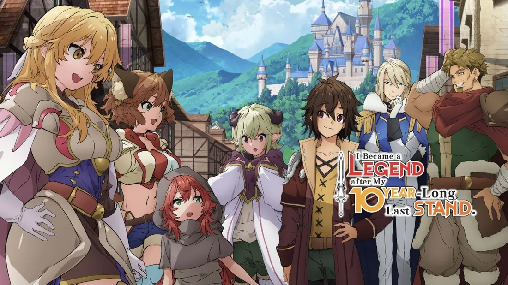
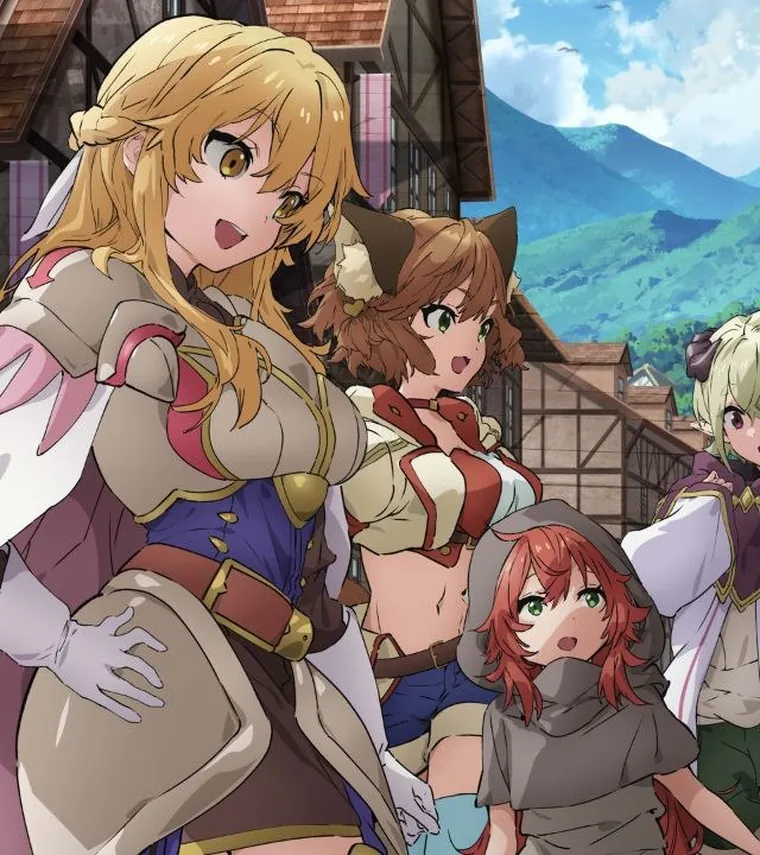
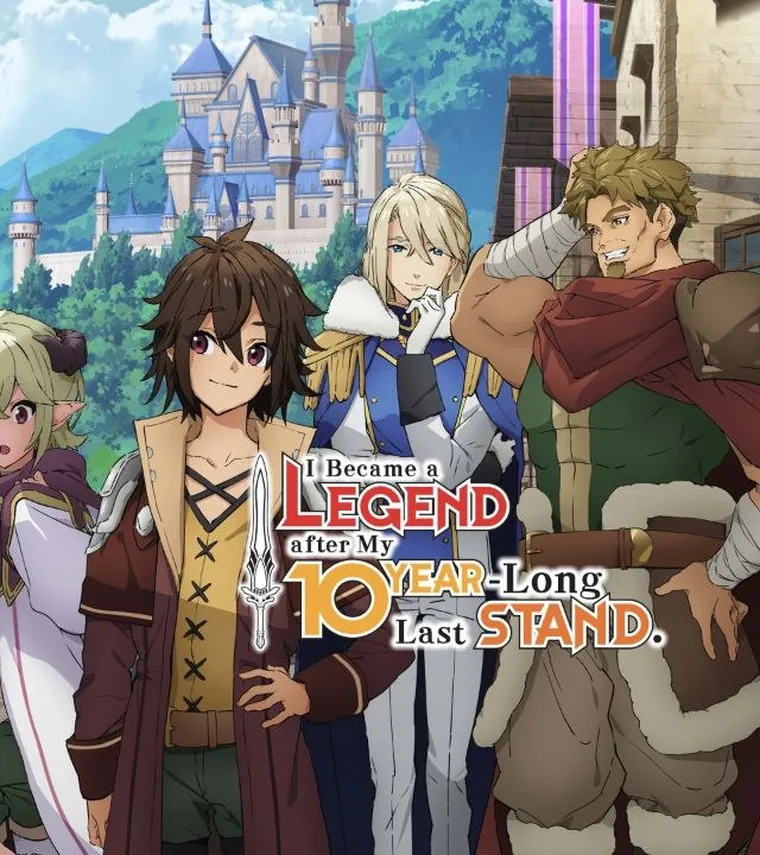
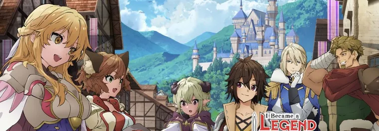
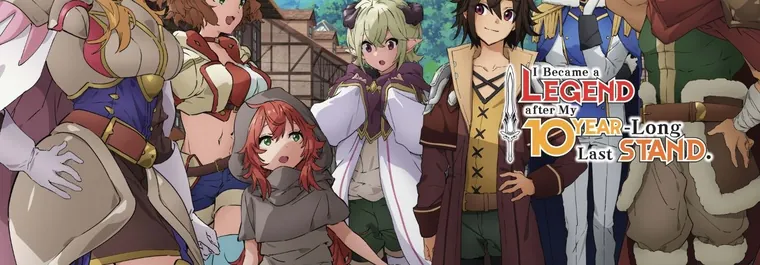

I Became a Legend After My 10 Year-Long Last Stand: Full Review, Every Episode and Ratings (2026)

Last updated: 13 October 2026
I Became a Legend After My 10 Year-Long Last Stand has one of the best titles of the 2026 summer season and one of the most interesting premises: what happens to a hero after the sacrifice? The answer, it turns out, is a very uneven twelve episodes — a strong opening, a slow middle, and a finale that finally remembers what the show is about.
This is a full review with an episode-by-episode summary of all 12 episodes, ratings from the major sites, and a straight answer on whether it is worth your time.
Quick facts
| Japanese title | ここは俺に任せて先に行けと言ってから10年がたったら伝説になっていた。 Koko wa Ore ni Makasete Saki ni Ike to Ittekara 10-nen ga Tattara Densetsu ni Natteita. |
| Studio | Gekkou |
| Director | Hiroyuki Kanbe |
| Source | Light novel (Ezogingitune) |
| Episodes | 12 |
| Aired | 6 July – 21 September 2026 |
| Season | Summer 2026 |
| Genre | Action, Adventure, Fantasy |
| Rating | PG-13 |
| Streaming | Crunchyroll |
| Opening | “Soredemo Donten o Koeteyuku” — sajou no hana |
| Ending | “Arikitari na Nichijou to Koun na Hibi e” — MEISHOHIKOKAI |
The story
Luck is an S-rank mage in the hero’s party. In the final battle against the Demon King, the party is swarmed and someone has to stay behind. Luck sends his two friends — Eric and Goran, both of whom have families waiting — ahead, and holds the line alone.
He does not die. He keeps fighting. No sleep, no rest, no relief, for what he experiences as one endless battle and what the world experiences as ten years. He wins. When he walks out, he is somehow younger than when he went in, and the world has already finished writing his story without him: statues, a noble title, a legend of a man who died saving everyone.
Luck cannot simply announce that he is alive — his friends have built peaceful lives on the assumption that he is gone. So he lets the legend stand. He changes his guild card from “Luck” the S-rank Supreme Sorcerer into “Lock” the F-rank Warrior, and starts again at the bottom of a world that has moved on.
Gallery




Artwork: official anime key art. © Ezogingitune, SB Creative / KOKOORE Partners.
Ratings from around the web
These are the scores the series actually received from each site, as of October 2026:
| Site | Score | Basis |
|---|---|---|
| MyAnimeList | 6.17 / 10 | 23,000+ user scores |
| AniList | 62% | ~43,000 lists |
| Crunchyroll | 4.4 / 5 | 20,000+ ratings |
| Anime-Planet | 3.17 / 5 | 1,240 votes |
| Anime News Network | 5.81 / 10 | Arithmetic mean |
| TVmaze | 6.9 / 10 | User score |
Read those together and the picture is clear: a mid-tier fantasy that most viewers liked, not loved. The Crunchyroll score is notably higher than the tracker scores, which usually means casual viewers enjoyed it more than the hardcore community did.
What works
- The premise is genuinely good. “Hero comes home and nobody needs him anymore” is a much more interesting idea than another power-up arc.
- The comedy of the F-rank disguise. Watching the strongest person in the room get treated like a rookie never stops being funny, and the show knows it.
- Lock himself. He is not trying to get stronger. He is trying to be left alone. That is rare for this genre and it carries the series.
- The finale run. Episodes 10–12 are a real step up in tension and give almost everyone something to do.
What does not work
- The ten years is never fully sold. The show explains the mechanics, but it rarely lets the weight of a decade land. It becomes a fun fact characters mention rather than something you feel.
- The animation is inconsistent. It starts fine and visibly thins out in the middle episodes. Fights are sometimes freeze-frames suggesting motion rather than animated.
- The de-aging. It exists to put a middle-aged hero in a teenager’s body, and the story never does much with it beyond a running joke.
- A small music pool. The same tense track turns up in almost every episode.
Episode-by-episode guide
All 12 episodes, what happens in each, and how we scored them. Scores are ours — the table above is the community data.
Episode 1 — When I Returned Home, I’d Become a Hero
Luck holds the line alone so Eric and Goran can escape with their lives. What should have been a short last stand turns into ten unbroken years of fighting. He kills the Demon General, then the Demon King itself. When he finally walks home, a decade has passed, his body has de-aged into a teenager, and the kingdom has already buried him in legend. He quietly rewrites his guild card from “Luck” the S-rank Supreme Sorcerer to “Lock” the F-rank Warrior.
Verdict: The strongest episode of the season. The puppet-magic detail — Lock forcing his own body to keep fighting while he catches his breath — is genuinely haunting, and the reunion lands emotionally.
Episode 2 — There Was a Formidable Foe Deep Inside the Den
Lock joins rookies Ario and Ginny on a routine goblin-den extermination. They run into Sia, a beastkin swordswoman fighting a Goblin Lord — and behind it, a Vampire Lord feeding a medallion. Lock destroys the medallion and the vampire. Sia works out exactly who he is. Back in the capital, Goran asks Lock to keep an eye on his daughter Cellis, who immediately accuses Lock of being her father’s illegitimate son.
Verdict: Sets the shape of the season: monster-of-the-week surface, vampire conspiracy underneath. The comedy of Lock pretending to be a beginner is the best joke the show has.
Episode 3 — She Suspects I’m Her Bastard Brother, and Now We’re Going on Her First Adventure
Lock tags along on Cellis’s first real adventure. The pair find a village wiped out with no bodies — a sign of illusion magic — and Lock quietly dismantles a dragon before Cellis can get hurt. They cross paths with Gerberga the Seraphowl and an illusionist working for the vampires. Sia arrives with worse news: a Vampire High Lord has united the Vampire Lords into one army.
Verdict: A quieter, character-first episode. Cellis is a good addition, though the “is he my brother” running gag gets stretched.
Episode 4 — After Ten Years, I’m Even in a Picture Book
Lock and his friends learn that the Vampire High Lord is hunting Gerberga, and start planning a counterattack. Along the way Lock discovers just how completely the world has moved on without him — he is now a character in children’s picture books.
Verdict: The ‘out of time’ theme lands here. Not much action, but the melancholy works.
Episode 5 — After Ten Years, I Was Told to Get Lost
The royal palace comes under attack. Lock decides the patient approach is over and takes the fight directly to the Vampire High Lord.
Verdict: The season’s first real escalation. Pacing tightens noticeably from here.
Episode 6 — After Ten Years, I Started a Family
After the battle against the Vampire High Lord, Lock’s life takes a turn he never planned for. The loner who spent ten years alone starts accumulating people who depend on him.
Verdict: The emotional centre of the season. The show is much better at ‘Lock accidentally builds a family’ than it is at power fantasy.
Episode 7 — The Trespasser and the Secret Passageway
Lock’s new house turns out to be full of hidden passages. Meanwhile trouble is brewing in the slums, and Philly — the Mastafon family’s fifth daughter — makes her debut.
Verdict: A setup episode. The house is a neat bit of world-building; the slums thread pays off later.
Episode 8 — The Party Is Complete for the First Time in 10 Years
Lock confronts Cavino about Milca and uncovers a conspiracy far larger than one missing person. Lefy Leanor Ardennes enters the story, and for the first time in a decade the old hero’s party is standing together again.
Verdict: The best mid-season episode. The reunion of the original party is what the whole premise was promising.
Episode 9 — Mythical Beasts That Lurk in the Darkness
Ario and Ginny take far too long coming back from a quest, so Lock and the group go into the sewers after them. What they find is not just beasts.
Verdict: Switches from slice-of-life to conspiracy thriller. Effective, though the animation starts to show its budget.
Episode 10 — Storming the Enemy Position
Fragments pulled out of a giant demon rat assemble into an unsettling statue of the “Dark Gods”. Before Lock can act, the Mastafon estate’s maids — controlled by charm magic — attack his home. The family dog Tama delivers a letter begging Eric for help. Eric and Lock storm the mansion. Eric fights the Vampire Lord; Lock goes through the mirror alone to save Philly.
Verdict: The finale run starts here and it is genuinely tense. Splitting Eric and Lock across two battlefields works well.
Episode 11 — I Fought for Ten Years, so I Can Easily Defeat Demons
Inside the mirror dimension Lock carves through an Anathema-empowered vampire army while the High Lord tries to sacrifice Philly to summon the Dark Gods. Outside, vampires breach the city barrier and Lefy defends it by enchanting the whole city’s weapons with holy magic. The summoning partly succeeds, and Lock is struck through the stomach.
Verdict: The season’s peak. Lock fighting bare-handed after his Hexblade is neutralised is the payoff the title promised.
Episode 12 — Leave the Next Ten Years and Beyond to Me Too
Lock survives by draining the Dark God’s severed tentacle, copies the god’s own spell, and crushes it into liquid before finishing it with wind magic. Every vampire in the world vanishes. Goran accidentally calls him “Luck” in front of Mastafon, blowing his cover. Philly is placed under house arrest as Lock’s assistant — and quietly settles into his chaotic household.
Verdict: A satisfying finale that closes the vampire arc and leaves the door open. The epilogue is warmer than the action.
Final score
| Category | Score |
|---|---|
| Story | 7 / 10 |
| Characters | 7.5 / 10 |
| Animation | 6 / 10 |
| Music | 6.5 / 10 |
| Comedy | 7.5 / 10 |
| Action | 7 / 10 |
| Overall | 7 / 10 |
Is it worth watching?
Yes, if you like fantasy that is more interested in what happens after the war than in the war itself. If you enjoyed the “hero out of time” feeling of Re:Zero or the overpowered-protagonist comedy of Overlord, this scratches a similar itch, more gently.
No, if you want non-stop action or a new power escalation every week. This is a slow, low-stakes show for most of its run, and the budget shows.
It is a comfortable binge rather than a landmark. Twelve episodes, about four and a half hours, and the last three are easily the best three.
Where to watch
All 12 episodes stream on Crunchyroll, with subtitles in English, Hindi and many other languages, and a Hindi audio dub available.
FAQ
How many episodes does it have?
12. The first season is complete and there is no second season announced yet.
Is it finished?
The anime’s first season is finished. The light novel is still ongoing, and the finale leaves clear room for more.
Is there a Hindi dub?
Yes — Crunchyroll lists Hindi among the available audio tracks.
Does it follow the light novel?
Yes, it adapts the light novel by Ezogingitune. The manga adaptation is also running.
Should I read the light novel instead?
The light novel is further ahead and the artwork is the source of the show’s visual identity. If you liked the anime’s premise but wanted more depth, the novels are the better version.